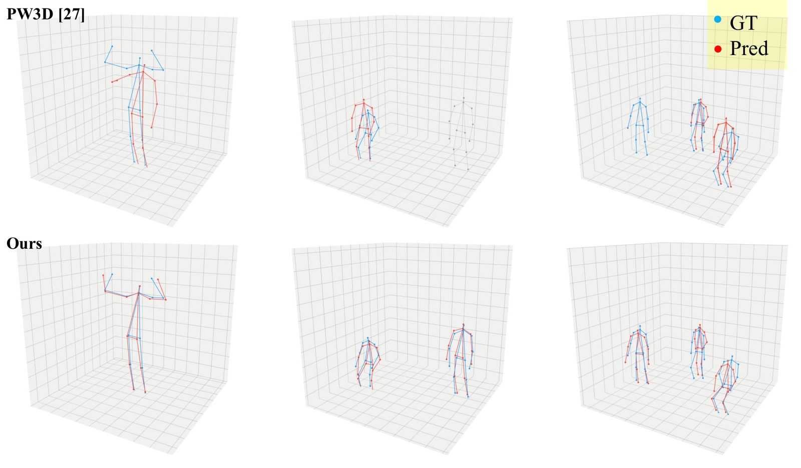

WiFi-JEPA: Self-supervised Learning for WiFi-CSI 3D Human Pose Estimation

Abstract
WiFi Channel State Information (CSI) enables privacy-preserving human pose sensing through walls and in darkness, but existing WiFi-based pose estimators often fail under domain shifts (e.g., changes in room layout and transceiver placement) and rely on costly camera-based annotation pipelines that limit scale. We propose WiFi-JEPA, a self-supervised framework that learns CSI-native representations by predicting masked latent embeddings, avoiding raw-signal reconstruction that can overfit hardware-specific artifacts. WiFi-JEPA makes three contributions: (i) CSI-specific tokenization and link masking tailored to the CSI tensor over channel–time–link (C, T, L); masking entire Tx–Rx antenna links forces the model to predict one spatial link view from others, capturing cross-link correlations informative of 3D spatial structure. (ii) A ray-tracing CSI simulation pipeline that generates pre-training data from geometric primitives at low marginal cost; ~90K simulated frames match ~90K real frames in pre-training effectiveness, while a human-mesh variant yields negative transfer. (iii) State-of-the-art results on Person-in-WiFi-3D: 76.8 mm single-person and 93.5 mm multi-person MPJPE, outperforming prior WiFi-CSI baselines under the same protocol. In a controlled comparison, four alternative SSL objectives degrade performance below training from scratch, whereas WiFi-JEPA consistently improves it.
Method
WiFi-JEPA keeps the CSI tensor factored as (C, T, L) — 60 subcarrier channels, 20 time steps, and 9 antenna links — embedding each (time, link) coordinate as its own token instead of flattening it into an axis-mixing 2D spectrogram. It then applies link masking: entire antenna links (5 of 9) are hidden and predicted from the rest, forcing the model to exploit the cross-link spatial correlations that make 3D pose recoverable. Prediction happens in latent space (JEPA), never reconstructing raw CSI or its hardware-specific noise. Phase 1 pre-trains the encoder this way; Phase 2 attaches a PETR decoder and fine-tunes on real CSI for multi-person 3D pose.

Phase 1: self-supervised pre-training with link masking on the (T, L) token grid. Phase 2: supervised fine-tuning with a PETR decoder for multi-person 3D pose.
Sim-Obj in Action
We pre-train on ray-traced CSI from scenes of simple bouncing geometric primitives — no human models or motion capture. As an object moves, ray tracing computes the channel and the CSI varies accordingly. It is this dynamics diversity, not geometric realism, that makes the representation transfer: ~90K simulated frames match ~90K real frames for pre-training, and combining both yields the best result.

Synthetic scene overview and CSI amplitude comparison. Top: sim-object (left) uses geometric primitives with fast bouncing trajectories; sim-human (right) uses human meshes with motion-capture animation. Bottom: CSI amplitude over 20 sub-frames for each source (500-sample median with 25–75% and 5–95% percentile bands; 50 individual traces overlaid). sim-object exhibits rich temporal variation while sim-human is near-static.
Each example (placeholder): left — a primitive moving while ray tracing computes the channel; right — the resulting CSI changing over time.
Results
On PiW3D — the only public multi-person WiFi-CSI 3D benchmark — WiFi-JEPA sets a new state of the art, improving single-person MPJPE by 14.7% over the previous best (DT-Pose) and reducing multi-person error from 107.2 to 93.5 mm. Adding simulated pre-training data improves both settings further.
| Method | Venue | SP MPJPE ↓ | SP PCK@20 ↑ | MP MPJPE ↓ | MP PCK@20 ↑ |
|---|---|---|---|---|---|
| WiPose | MobiCom'20 | 101.8 | — | — | — |
| MetaFi++ | IoT-J'23 | 132.0 | 62.0 | — | — |
| HPE-Li | ECCV'24 | 120.2 | 59.1 | — | — |
| DT-Pose | arXiv'25 | 90.0 | 72.1 | — | — |
| PiW3D (baseline) | CVPR'24 | 91.7 | 69.3 | 107.2 | 58.1 |
| WiFi-JEPA (real) | Ours | 78.2 | 74.5 | 97.1 | 59.3 |
| WiFi-JEPA (real+sim) | Ours | 76.8 | 75.9 | 93.5 | 61.5 |
MPJPE in mm (lower is better); PCK@20 in % (higher is better). SP: single-person, MP: multi-person.

Qualitative comparison (GT in cyan, prediction in red). Top: PiW3D baseline. Bottom: WiFi-JEPA. Left to right: 1-, 2-, and 3-person scenes.
BibTeX
@inproceedings{kim2026wifijepa,
title = {WiFi-JEPA: Self-supervised Learning for WiFi-CSI 3D Human Pose Estimation},
author = {Kim, Doeon and Lee, Jungyoon and Kim, Seongsin and Kim, Seong-heum},
booktitle = {Proceedings of the European Conference on Computer Vision (ECCV)},
year = {2026}
}